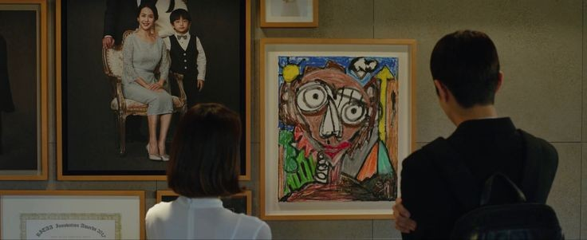

Yonsei University
Yonsei University
Early Life and Education:
Bong Joon-ho was born on September 14, 1969, in Daegu, South Korea. Raised in a well-educated family, his father was an editor, and his mother was a former high school teacher. His early life was influenced by the intellectual environment of his home, where he was encouraged to pursue education and creativity. Bong showed an interest in the arts at a young age, particularly in visual storytelling and literature. However, his original intent was not necessarily to pursue filmmaking but to study sociology.
Bong attended Yonsei University in Seoul, where he majored in sociology and minored in filmmaking. During his time at university, he became fascinated by films, especially those that delved into complex social issues. Inspired by a mix of global and Korean cinema, Bong began making short films. These works were heavily influenced by both Western and Asian filmmakers, demonstrating a unique blend of cultural perspectives. His first short film, Looking for Paradise (1999), was a critical step in shaping his career trajectory.
His academic background in sociology played a significant role in his filmmaking style, often allowing him to approach stories with deep social commentary. This interest in the human condition and societal issues would later become key elements of his films.

Career:
Bong Joon-ho’s career began in the late 1990s, and it wasn’t long before he made his feature-length debut. In 2000, he directed Barking Dogs Never Bite, a dark comedy about a man’s frustrations with his neighbors. While not an immediate commercial success, the film was praised for its originality and quirky sensibility. The movie introduced many of the themes that would become central to Bong’s later works, including class conflict, human relationships, and social isolation.
Bong’s true breakthrough came with Memories of Murder (2003), which solidified his status as a masterful storyteller. Based on a real-life series of unsolved murders in Korea, the film blended crime drama with a deep dive into the psychological toll of the investigation on its detectives. The film was critically acclaimed for its balance of dark humor and intense drama, making it a major success in Korea and internationally.
In 2006, Bong released The Host, a monster film that combined horror with social commentary on environmental issues and government responses to crises. This film pushed Bong into the international spotlight, breaking box office records in South Korea and receiving widespread acclaim for its blend of horror, political satire, and family drama.

Global Recognition:
Bong Joon-ho’s global recognition reached new heights with Parasite (2019), which won the Palme d'Or at the Cannes Film Festival, the first-ever South Korean film to achieve this honor. Parasite became a monumental success worldwide, striking a chord with audiences and critics alike for its masterful storytelling, genre-bending narrative, and sharp commentary on class disparity. Bong’s ability to weave dark humor with social critique captured the attention of global filmgoers and critics.
The film’s success continued as it garnered several accolades, including four Academy Awards in 2020, including Best Picture, Best Director, Best Original Screenplay, and Best International Feature Film. This marked a historic moment for both Bong and South Korean cinema, as Parasite became the first non-English language film to win the Academy Award for Best Picture.
Bong's success with Parasite was preceded by Snowpiercer (2013), a dystopian sci-fi film that had a significant international release. Snowpiercer attracted a global audience due to its star-studded cast (including Chris Evans) and its rich allegorical themes about class struggle. The film’s success in the U.S. and globally demonstrated Bong's ability to transition to English-language cinema while maintaining his unique storytelling voice

Directorial Style:
Bong Joon-ho is known for his distinctive filmmaking style, which combines genre experimentation with social commentary. His films often mix dark humor, suspense, and social critique, providing a nuanced and entertaining exploration of human relationships and societal structures. One of his hallmark techniques is blending genres to create unexpected narrative shifts. For example, The Host mixes monster movie tropes with deep societal questions, while Snowpiercer uses the framework of a post-apocalyptic action thriller to discuss class inequality and revolution.
Another signature aspect of Bong's films is his keen attention to character development. Whether it's the family dynamics in Parasite or the police investigation in Memories of Murder, Bong's characters are richly developed and often reveal deeper truths about society as a whole. His films are known for their complex, multi-layered plots that engage audiences on multiple levels, from emotional investment to intellectual analysis.
Bong is also praised for his ability to craft tension and suspense, often using long takes, unpredictable plot twists, and detailed production design to immerse viewers in his stories. His visual style often incorporates meticulous framing and careful use of space, which enhances the thematic depth of his films.